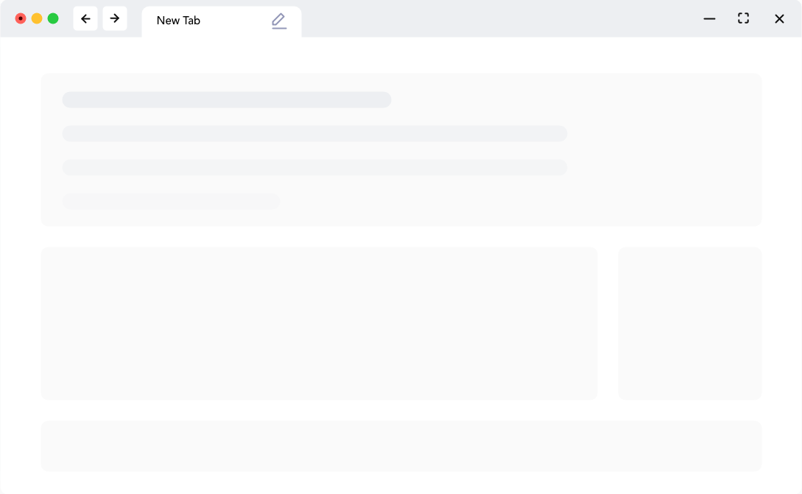
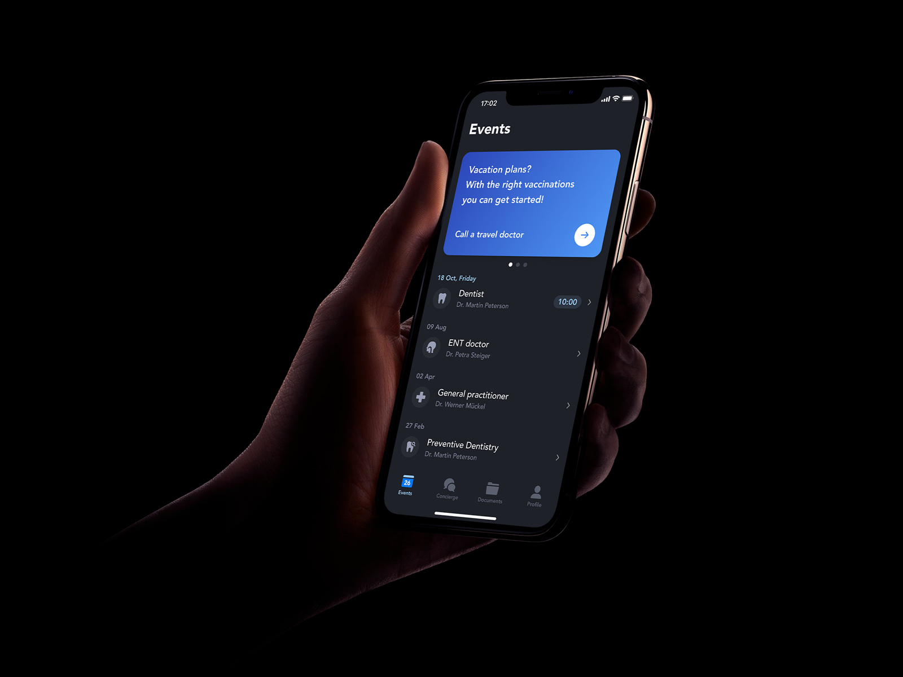

Your brand new personal manager that brings together features like health monitoring, diagnostics detection and much more.
With the newest technologies and resources, MedPlus offers a powerful experience in the health diagnostic detection process. MedPlus is by default a friendly patient environment.
MedPlus offers support for doctors in order to take care of their patients by giving them a diagnostic or even suggest treatments and prescriptions.
Because a modern UI is a trend nowadays, MedPlus has a responsive design and supports all major device sizes.
Syncing data from your Google Fit App is easy then ever. Once you created an account your data will be synced every day.
with our built in dark mode
